Intro to the Command Line
teaching-materials.org/cli
Agenda
This class will be a combo of lecture + exercises
- Why use the command line?
- Command line "lingo"
- Working with folder directories
- Working with files
- Working with commands
- Troubleshooting
When will I use this?
You might use the command line to...
- Use version control (like Git)
- Run build tools and site generators
- Serve a website locally while developing
- Automate file actions with a script
- Control other computers
The "lingo"
- "Terminal"
- "Command-line"
- "Command prompt"
- "Shell"
- "Console"
- "CLI"
These are all pretty much the same thing.
What is a Terminal?
A text-based command interpreter.
The most common shell is "bash".
For Mac OS or Linux, use the "Terminal" application.
For Windows, use Git Bash.
(Download here if you haven't installed yet.)
Prompt
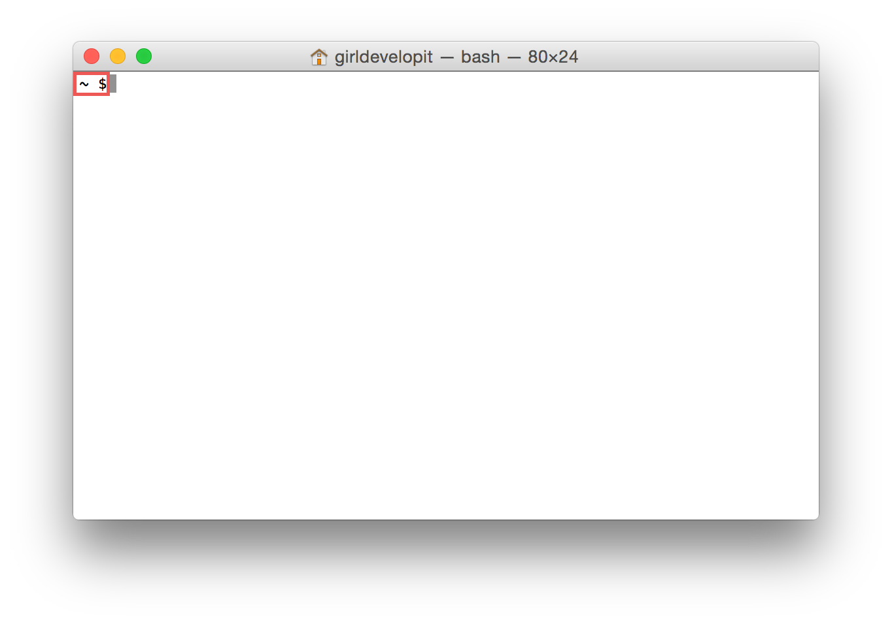Prompt
Usually shows your username and computer name.
Indicates that the terminal is ready for a command.
Cursor
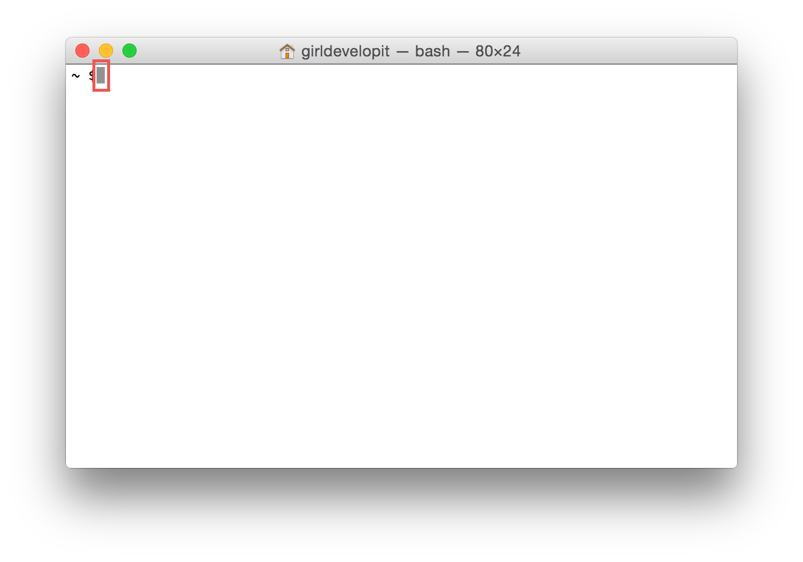Cursor
Indicates your current spot in the terminal.
Shows you where the stuff you type will go.
Try It: Your First Commands
- Open your terminal.
- Type
calinto your terminal and press enter. - Type
echo hellointo your terminal and press enter. - Type
say hellointo your terminal and press enter. - Experiment with the
echoandsaycommands.
Commands & Arguments
Many commands take one or more arguments, which come after the command, and give detail about what the command should do.
For example, echo takes an argument representing the text to be repeated.
echo "This is an argument."The Current Directory
pwd
(Print Working Directory)
Type it whenever you want to see what directory (folder) you’re in.
pwd
(Print Working Directory)
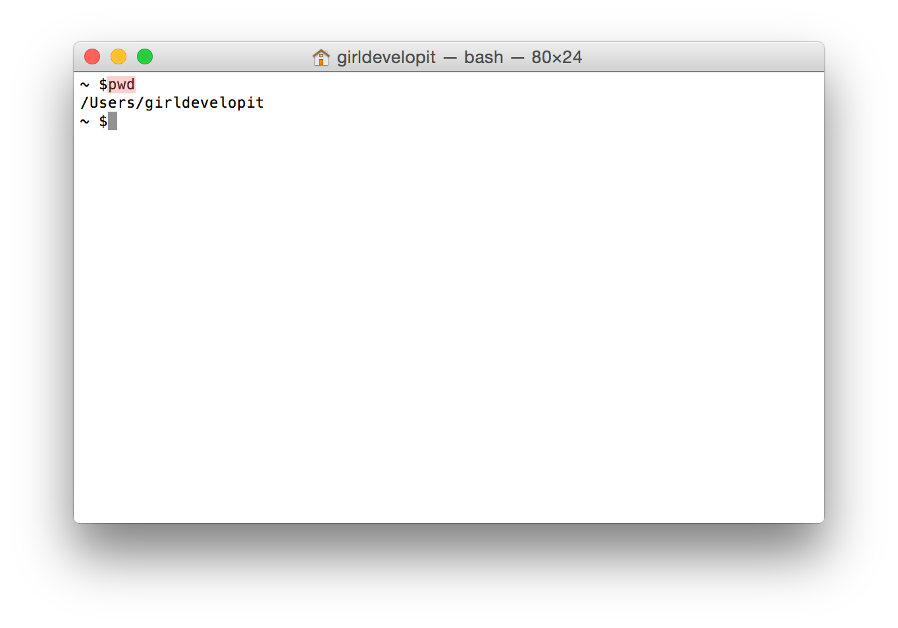clear
The clear command clears the contents of the terminal and issues a prompt.
This is good for removing previous output that is unnecessary to the task at hand.
Feel free to use this whenever things get too cluttered.
Directories
Also referred to as "folders".
A directory is a container for files or other directories.
Directory Trees
The set of all folders, taken together, makes up your entire file system.
This system is organized into a kind of upside down tree.
Directory Trees
At the very top of the tree is the root folder.
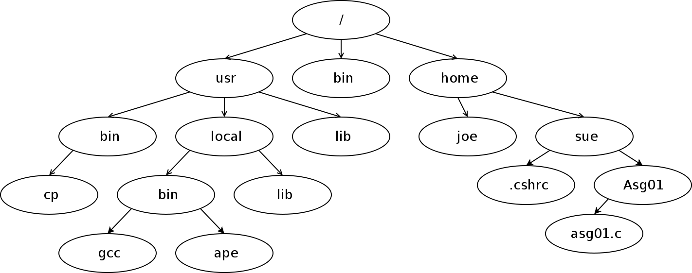Paths
Nested files and directories can be referenced using paths.
Each directory or file is separated by a forward slash /
There are two kinds of paths:
- Relative:
Desktop/the_project/overview.txt - Absolute:
/Users/jane/Desktop/logo.png
cd
The cd command changes the current working directory.
It expects a file path as an argument.
If no file path is given, it assumes your home directory by default.
cd
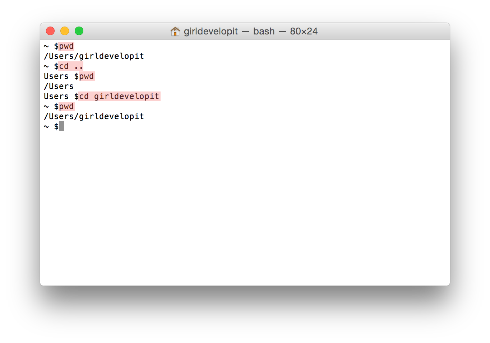
Shortcuts
- Current Directory:
. - Parent Directory:
.. - Home Directory:
~ - Previous Directory:
-
Bonus: Drag a folder into the terminal to show its path.
(Doesn't quite work in Windows.)
List
The ls command lists the contents of a directory.
It expects a file path as an argument.
If no file path is given, it assumes the current directory by default.
ls
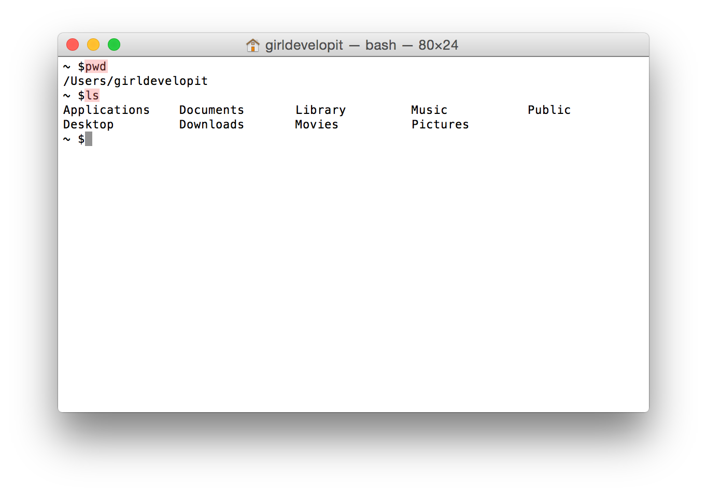
Flags
The ls command accepts several option flags.
A flag is a special argument that is used to set an option for the command.
These are commonly a hyphen followed by a single character (e.g. -g)
ls -l
Setting the -l flag on the ls command causes it to provide more verbose (long) output.
Hidden Files
Filenames that begin with a period are hidden from normal output.
e.g. ".bashrc"
Use the ls command with the -a flag to see hidden files in addition to the usual output.
Type ls -la into your terminal.
Use the -h flag to get human readable file sizes.
ls -la
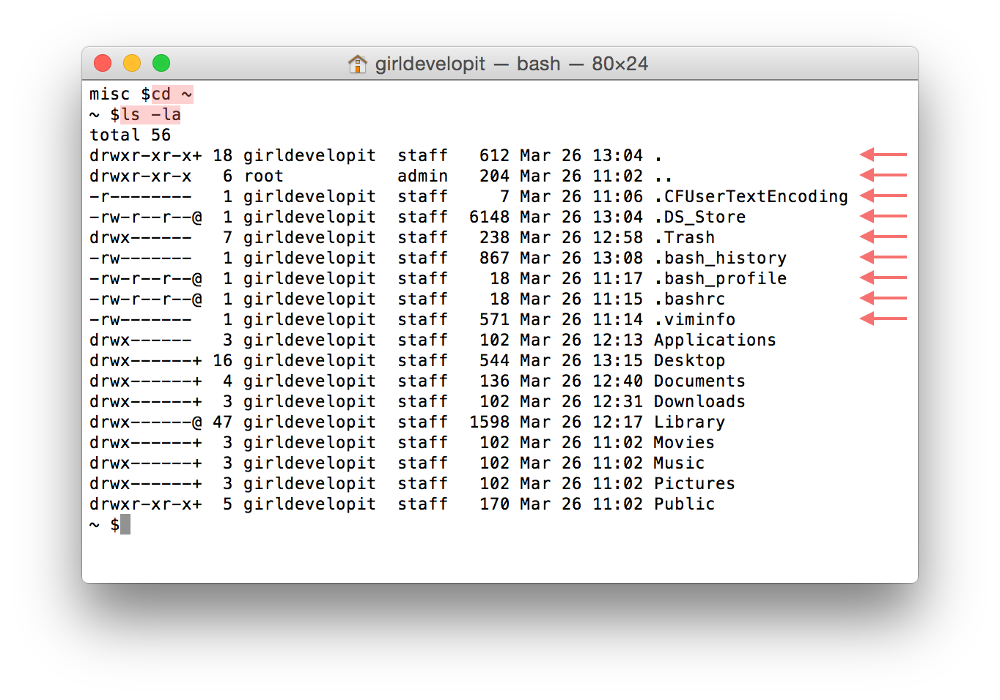
Man Pages
man
The man command brings up the manual for the specified command. Press the space bar or the arrow keys to page through and press q to exit.
man lsLove the Tab
Tab completion autocompletes commands and filenames.
- Pressing tab once autocompletes a unique instance.
- If there's more than one possible completion, pressing tab twice gives you all the options available.
Try it: cd & ls
Play with the cd and ls commands.
Be sure to incorporate:
- relative file path
- absolute file path
- the
.shortcut - the
..shortcut - the
~shortcut cdwithout an argument
Use pwd to check your location periodically.
Open
Use open to open a file or directory in its default app—the equivalent of double-clicking it.
(Sadly, this does not work in Windows. 😞)
Pass the path of the file or directory name as the argument.
Making a Directory
Use mkdir to create a new empty directory.
Pass the path of the directory name as the first argument.
If the base of the path doesn't already exist, the command will fail.
Use the -p flag to create the full path if non-existent.
mkdir
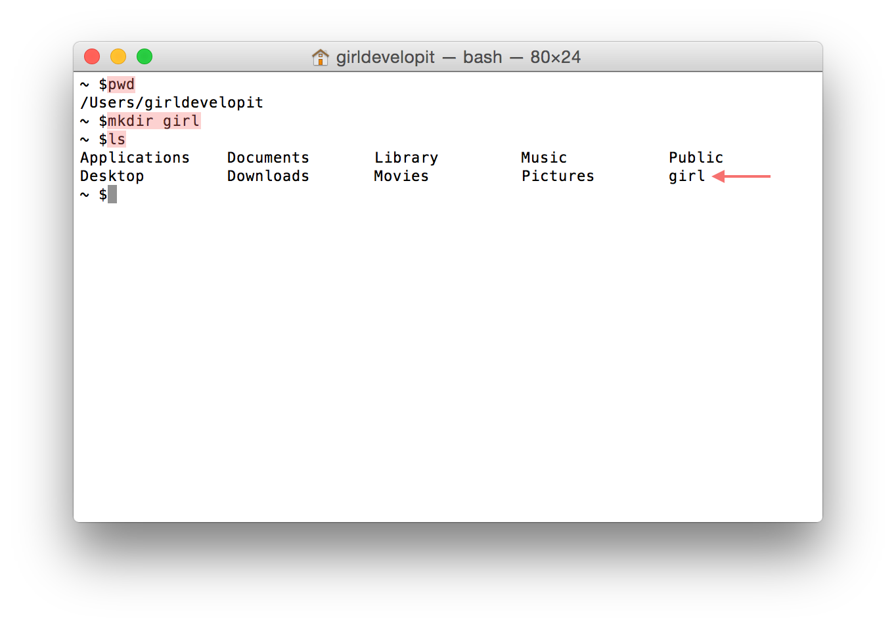
Removing Directories
Use rmdir to remove an empty directory.
Use rm -r to remove a non-empty directory.
rmdir
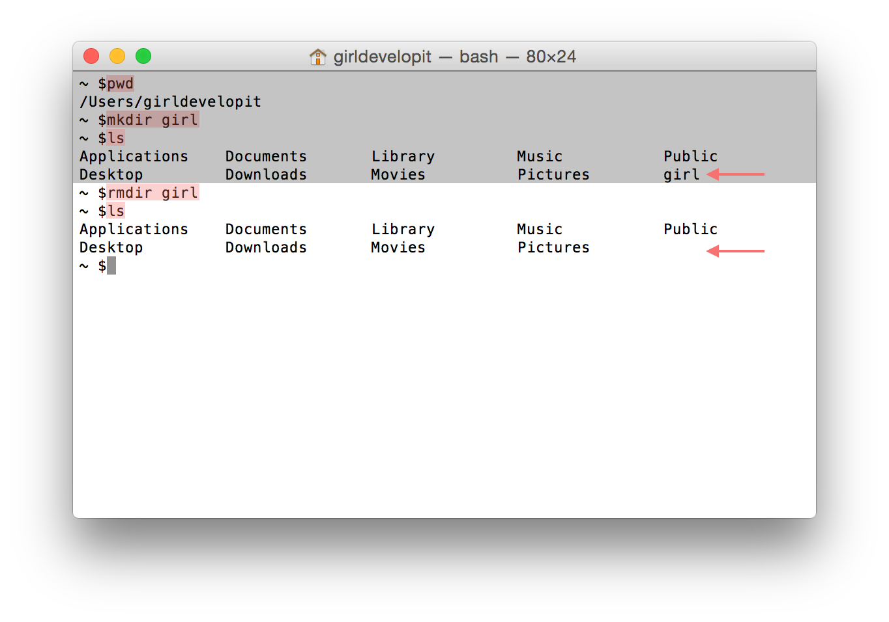
Let's Develop It!
cdto your home directory.- Create the girl/develop directory path.
- Navigate into the girl/develop directory.
- Create the it directory.
- Navigate up two directories.
- Use the
pwdcommand to verify you are home. - Remove the girl/develop/it path.
Let's Develop It
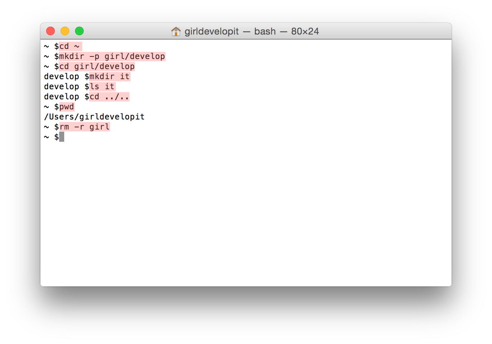Files
Use cat to output the contents of a file to the console.
Use more to step through the contents of a file one screen at a time.
Use less to step backwards or forwards.
Let's Develop It!
Explore the /usr/share/misc files using cat, more, and less
Can you find your birth month's stone and flower in the birthtoken file?
Try looking over the shoulder of a neighbor.
Let's Develop It!
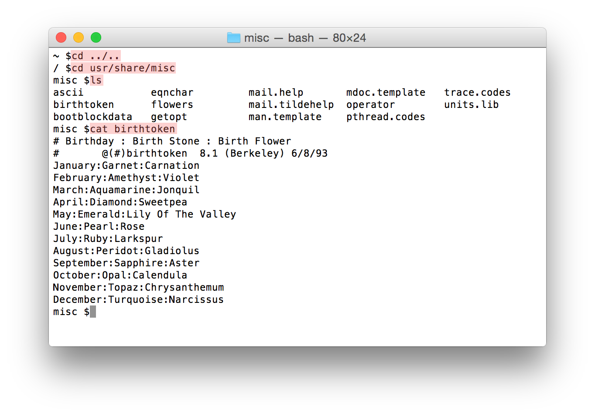Create a File
Use touch to create a new file.
The touch touch command expects the name of your new file as an argument.
touch
(create a file)
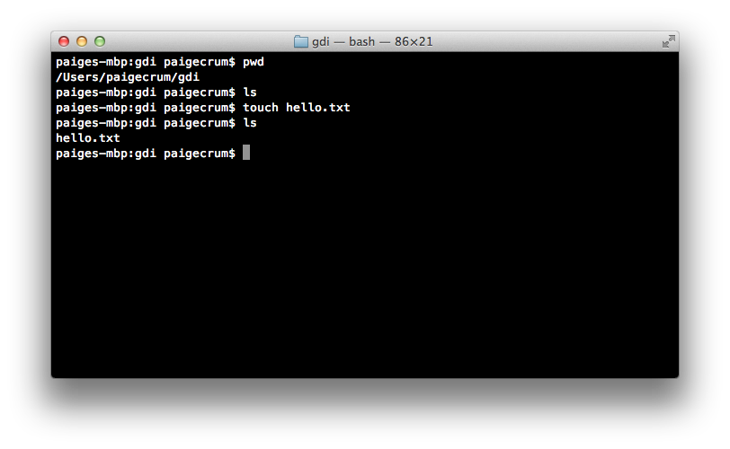Copy a File
Use cp to copy a file.
The cp command takes two arguments:
- 1st argument = the "origin" file
- 2nd argument = the "destination" file
cp resume.txt resume-copy.txtcp
(copy a file)
cp origin destination
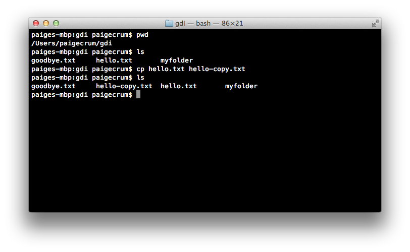
Copy a Directory
Use cp -R to copy a directory.
The cp -R command takes two arguments:
- 1st argument = the "origin" directory
- 2nd argument = the "destination" directory
cp -R homework old-homeworkcp -R
(copy a directory)
cp -R origin destination
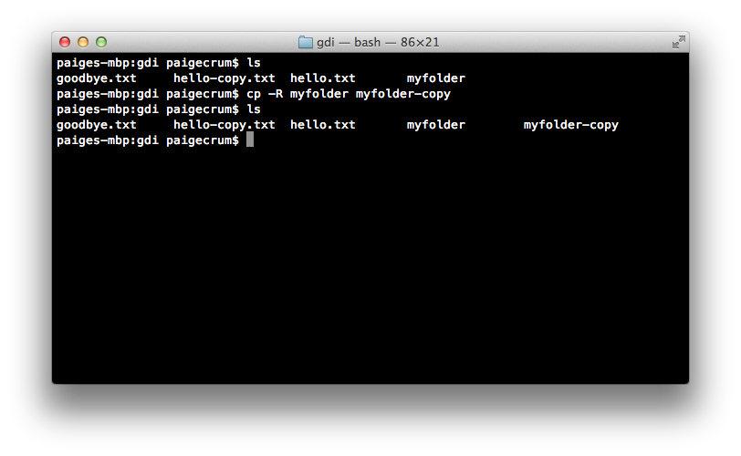
Moving (or Renaming) a File/Directory
Use mv to move a file or directory.
The mv command takes two arguments:
- 1st argument = the "origin"
- 2nd argument = the "destination"
Move a File/Directory
mv origin destination
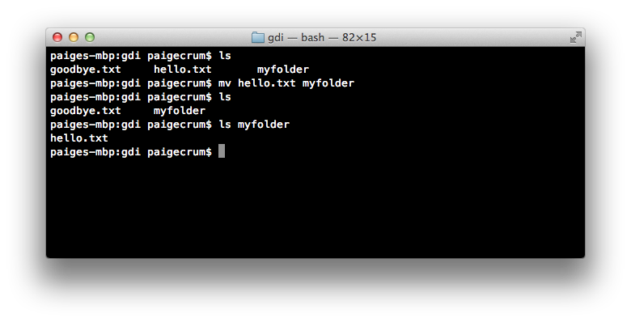
Rename a File/Directory
mv orig dest
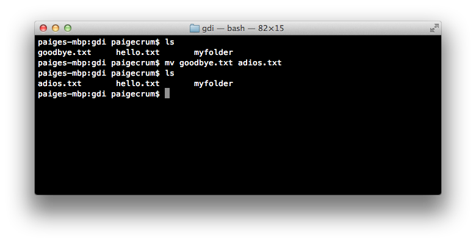
Remove a File
Use rm to remove a file.
The rm command takes the name of the file you are removing as an argument.
rm
(remove a file)
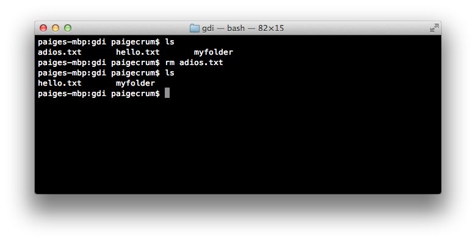Let's Develop It!
- Create a folder called cli.
- Make that folder your current working directory.
- Create two files: file1.txt, file2.txt.
- Copy file1.txt and call the copy file3.txt.
- Create a directory called folder1.
- Move file1.txt into folder1.
- List the contents of folder1 without going into it.
- Rename file1.txt to myfile.txt.
- Remove the directory folder1, including the file inside of it.
Edit a File
You can use various editors built into bash:
vi myfile.txt
emacs myfile.txt
pico myfile.txt
Or on a Mac, you can open with any desktop app:
open -a TextEdit myfile.txtOr with the default editor:
open -t myfile.txtCommand Line Movement
- ctrl-a: jump to beginning of line
- ctrl-e: jump to end of line
- alt-f: jump forward a word
- alt-b: jump back a word
- alt-d: delete word
- alt-t: transpose two words
- ctrl-xx: jump back to your last edit, again to get back to original position
More Command Line Movement
- The left/right arrow keys let you edit within a command
- The up/down arrow keys let you select previous commands
- tab auto-completes filenames
Bonus for Macs: Hold the option key and click to move the cursor.
Command Line History
Use the history command to see a list of all your previous commands.
Each command will be listed next to a line number.
A few history-related commands:
- !!: Latest command
- !568: Command by line #
- !open: Command matching string
history
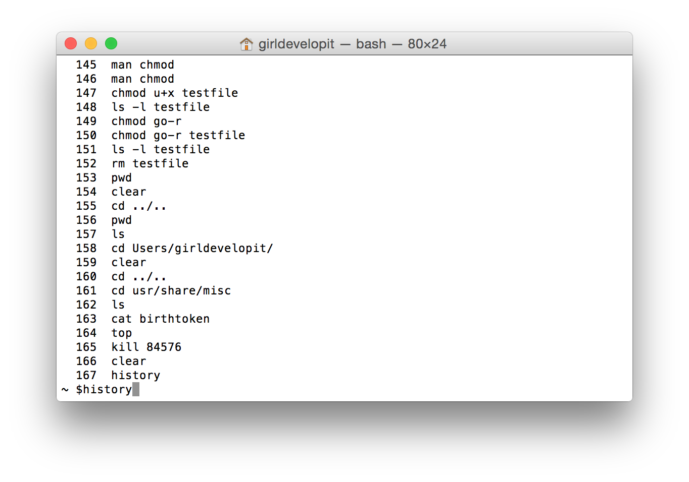Let's Develop It!
- Use your
upanddownarrows to locate a past command with one or more arguments. - Move your cursor to the beginning of the line.
- Move your cursor to the end of the line.
- Change one of the arguments and run it.
- Run the
datecommand. - Re-run the command from step 4 using
!. - Time the execution of your original command by running
time !!.
Real World Examples
Let's revisit the use cases from the beginning of class and go into more detail.
Version Control
Though you can do a lot with GUI tools for Git, there are some functions that still require the command line.
git pull upstream masterCheck out Try Git for an intro, or watch for our next GDI Git workshop.
Run Build Tools
Build tools process your code to make it more efficient or to automate repeated tasks.
For example, you can use tools like webpack to combine multiple JS files into one "minified" file.
webpack ./src/index.js dist/bundle.jsStatic Site Generators like Jekyll build websites using templates, avoiding duplicated html.
jekyll buildServe up a Directory
When working on a website locally, you can run a simple server program on your computer so you can browse the site over http instead of the file protocol.
This example uses a built-in function of Python:
python -m simpleHTTPServerMost build tools also include a local server function.
To stop a running server, press Ctrl + C.
Automate with scripts
You can write or find scripts to batch process files.
for example, this open source script parses PDF bank statements and converts the data to a format that can be imported into banking software:
perl chase-bank-PDF-to-QIF.pl -oChase2018.qif ~/statements/*.pdfControl other computers
These "other" computers might be:
- A cloud environment like Cloud9
- A remote server
- A virtual machine or container on your own computer
- A very simple computer like a raspberry pi
ssh gdi@192.168.0.23Or it could be a very complicated doorbell alternative
Troubleshooting:
Where's the prompt?!
Different processes have different ways of exiting back to the prompt. If you're stuck, try one of these:
- ctrl + c
- ctrl + x
q:q- esc key, then
:q
Troubleshooting:
command not found
You may need to install the software that uses the command.
Try searching online for:
"how to install [command-name-here] on [Mac/Windows/Linux]"